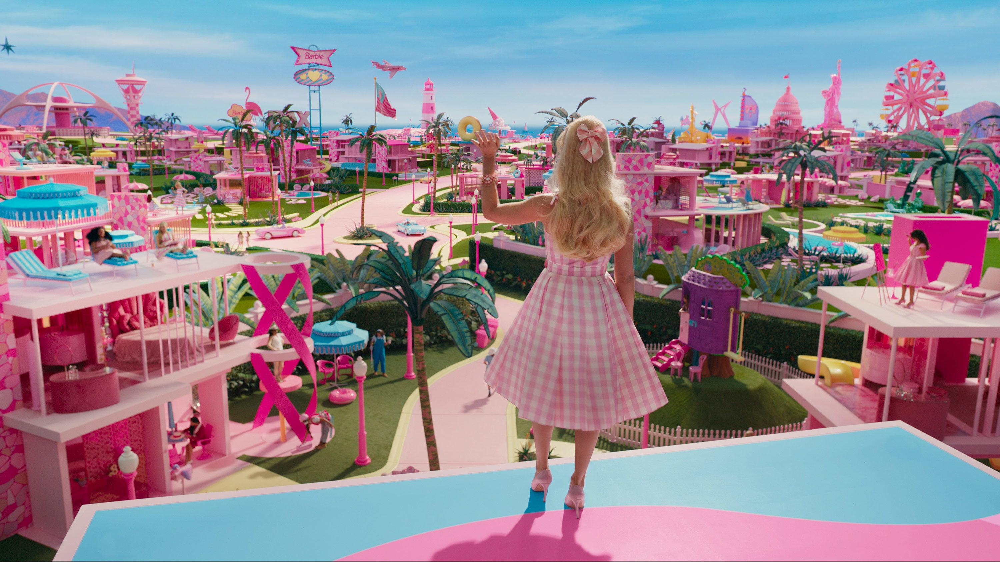

Reflection
My basemap design is inspired by “Barbie land” from the film Barbie (2023). Of course, it has big emphasis on the color pink, so I tried to use as much shades of pink without making the map look too messy. I took inspiration from the aqua blue used as their beach for the water on my map. I was able to find the exact “Barbie” shade of pink and the exact font used in the title of the movie. I used these for the “country label.” From the image, I took inspiration from the grass to color my land, Barbie's dress, the road, the pops of hot pink from the houses, the yellow of the slides attached to the homes, and the pops of purple to color my roads and bridges. I knew going into this that I'd have to be careful with how much pink I used and where. I could make all my text label pink or else one would not be able to tell apart the major cities from the minor cities. I played around with the halo feature a lot in order to help me differentiate labels. Furthermore, because I used shades of pink that looked similar, maintaining the visual hierarchy across scale was tricky. I would change the pink because it looked too similar to another and forget to implement this change in the rest of my design. I had no idea how to continue after the key code components that were provided. I asked AI to help me meet the requirements and it was a huge help when it came to building the map. I didn't like the icons it generated so I asked it to change them to include a coffee cup, museum, and smiley face. It told me that the icons I had chosen were not available in Glyphicons but it made the decision to switch the prefix to Font Awesome.

See full Python Mapping written portion for lab 6.